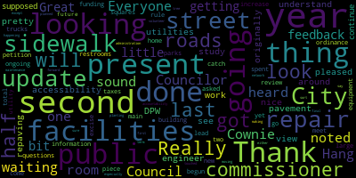
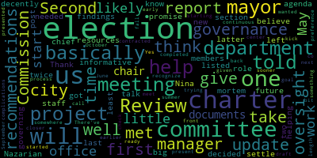
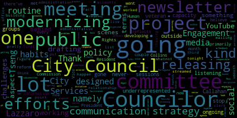

[Callahan]: Everyone in the waiting room is me. City Council.
[Madam Clerk]: Test one, two, test one, two.
[Collins]: There will be a meeting of the Medford City Council Committee of the Whole, June 26, 2024. This meeting will take place at 6 p.m. in the City Council Chamber, second floor, Medford City Hall, 85 George P. Hassett Drive, Medford MA, and via Zoom. Madam Clerk, please call the roll.
[Madam Clerk]: Councilor Callahan? Present. Anna, we can't hear you again. Councilor Callahan? Present. Present, present. President Collins.
[Lazzaro]: Present.
[Madam Clerk]: Councilor Lazzaro.
[Lazzaro]: Present.
[Madam Clerk]: Councilor Levee.
[Lazzaro]: Present.
[Madam Clerk]: Councilor Scarpelli. Present. Councilor Tseng.
[Callahan]: Present.
[Collins]: And President Bears. Five present, two absent, the meeting is called.
[Callahan]: I am present, this is Councilor Cownie and I am present. Thank you, we heard and noted you.
[Collins]: By present to absent, the meeting is called to order. The action and discussion item for this meeting is 24-006 offered by President Bears, review of the 2024-2025 council governing agenda. So as a brief refresher, this term, for the very first time, Medford City Council, at the beginning of the term, put together a governing agenda which lays out submissions from each councilor who chose to submit proposals, either that were already in committee from previous terms or new ideas, things that the City Council would like to work on over the course of this term. The process for putting together this document was paper 24-006 proposing the same. After that, there was a period during which councilors submitted proposals to council leadership, myself and President Bears, which were then organized into this document. We had a committee of the whole, like this one, we were discussed which committee each project ought to go into. And each project, if it didn't already have a paper number, has been, assigned a paper number as it's been proposed. So in this meeting, we are going to have our first check-in on this document. Now that's halfway through this year. It's a quarter of the way through the term. So this is a status meeting to review all of the papers currently in the governing agenda. And so the process for this meeting, we have about, 45 minutes, we're not gonna go past 7 p.m. to review the overall document. It's a long one, as people remember, that's quite a lengthy document. We're going to go section by section. We're going to have the chair of each committee, if they're present, do an overview of the papers in their committee. They can give a status update, they can give the highlight reel, just a brief overview of what's being worked on and any future plans to take up papers in that. committee your next steps for papers that have been worked on. I will ask my fellow Councilors to try not to take more than three or four minutes, five at the most, to go over the works in your committee so that we can all center around a general update across all committees and have a brief discussion at the end. Since President Bears will be joining us a little bit later on the meeting, I'm going to start three sections down with the education and culture committee, and then we can go clockwise from there. The chair of the Education and Culture Committee is Councilor Scarpelli, who I believe has to be absent tonight, reviewing the table of contents for this section. There were no major projects yet proposed in this committee, none of this draft, as with all of the other City Council committees. There are relevant city ordinances and regulations that are assigned to this committee, which it can sort of, you know, if there's free time that the committee has or it doesn't have an active legislative project, it can be reviewing those. I do not believe that the Education and Culture Committee has met yet to do any of this kind of maintenance work in order to take up any legislative projects so far. So we'll proceed to the Governance Committee, chaired by Councilor Tseng.
[Tseng]: Thank you. So under the governance committees section in the governing agenda, there are basically two big projects. The first one is the update to the city charter. Second one listed is the elections department oversight report and recommendations. I'll take the latter first. On that we met I believe we met twice on it once with members of the Elections Commission to review the findings of the post-mortem after the 2023 election. And at that meeting, we got to talk to Nina Nazarian, our chief of staff, who was at the time helping take over the Elections Department after our last elections manager left. there was a decently, you know, informative meeting and I think the committee decided that we would give the new elections manager time to settle into the role and to basically promise, help the elections department get the resources they needed in the future. So that is basically at least with the 2023 election oversight report and recommendations, completed that. And we recognize that it's a continuous process as well. So we will likely check back in closer to the next few elections. With the updates to the city charter, we had wanted to start this project a little sooner in May, May or June. We've been trying to work with the mayor's office on this. There've been some complications on that front. One of them being that the call-in center, who we like to help give us documents and present to us, is not contracted to meet with us. So that's something that the mayor has told me that she will work on. But the mayor's office has told me that they will also get us documents that they've presented to the and Charter Review Committee as well to help us kick start our meetings. I think we have a goal of starting somewhere in the summer or early fall. With it, the chair, one of the co-chairs of the Charter Review Commission has also told me that they will likely have a draft charter ready in September or October, but it's the preference of the Governance Committee to get started on this a little bit earlier, given the length of this project.
[Collins]: Thank you so much, Councilor Tseng. We will proceed next to the planning and permitting committee of which I am the chair. So the update on this committee, I'll try to be brief. This is the committee that meets most often, been meeting twice a month since I believe February. Our major project, our most major project is zoning reform, which the Council has been working towards for longer than I have been on City Council. The City Council completed a phase one of recodification at the very beginning of my first term dealing with tweaks and cleanups to the zoning code. building code that were recommended by Attorney Bob Roski and city staff. Paper 24-033 represents phase two of our zoning reevaluation. The city council secured funding for a zoning consultant in 2022 and 2023, and that, with the help of the Planning, Development, and Sustainability Department, is manifesting in our contract with Innes Associates. We have been meeting with them at least monthly since March, on a work plan to overhaul the city zoning and bring it into alignment with the comprehensive plan, the housing production plan, and the climate action and adaptation plan, which were created collaboratively between city staff, the city council, and residents over the past several years. And we've gotten through kind of the initial tweaks, definitions, streamlining, kind of low-hanging fruit aspect of that process with the first package of zoning amendments that we passed earlier this month. And our next batch of work, I believe, is around using the mapping analysis, which was just completed by Innes Associates. We reviewed it last night. to develop a global approach to zoning changes, things that we want to see throughout the entire community and also neighborhood by neighborhood, district by district, corridor by corridor changes to bring smaller areas of the city into alignment with what residents want guided by those plans. So that is the, I think, most major project of this committee. There are other ordinance projects that go along with it. For example, transportation demand management proposed by Councilors Leming and Tseng, which also comes from the Climate Action Adaptation Plan. I know this has been brought up to city staff. There are other proposals in this committee, which have not yet been taken up at a super granular level, such as Green Score, which also has to do with the building code and making new developments more energy efficient and holding developers in Medford to a better environmental standard. This ordinance under the ordinances section, the condo conversion ordinance was recently subsumed into the zoning overhaul bucket of work. This aligns with our affordable housing goals that are very prominent in the goals of the zoning revaluation that we're doing so will be pursuing the condo conversion ordinance which was begun in 2022 within the context of the zoning overhaul. This committee is also where we have referred several housing home rule petitions, including rent stabilization we held one meeting on that. I'm the sponsor of that paper, I don't plan for us to meet on that until at least the fall. We also referred into this committee the housing home rule petition around the real estate transfer fee. The future of this local option at the State House is looking uncertain, I would say bleak, and so I think it's a discussion that I would like to have with my fellow councilors, what the fate of that home rule petition should be in this community. There are several other projects in this committee, including reviewing the fee schedule, which we have already begun, making sure that our administrative fees are brought into alignment with best practices from other neighboring committees to make sure that we're not charging way, way less than other communities are charging for things like marriage licenses, dog licenses, vehicles, just making sure that we're keeping up with best practices and updating things that haven't been updated in a very long time. The cycling safety ordinance, this has not been formally proposed yet. idea that I would like to put forward later in the term. And I know that our PDS department has already kind of included the goals of a cycling safety ordinance into our existing complete streets set of goals. Finally, some proposals that have not yet been formally introduced that have to do with energy efficiency for new and existing buildings, energy disclosure, the benchmarking ordinance, And finally the rental ice licensing ordinance also needs to be given a paper numbers. This was proposed. In March of this year we have not yet had a meeting on a specific proposal for the ordinance itself in this committee. Finally pesticide regulations and the blasting earth removal regulations these are 2 of the ordinance projects that we have not yet met on to go over language and perhaps they are things that will meet on later in the term. If our other priorities left for it. I also want to note that the Licensing, Permitting, and Signs Subcommittee exists within this committee. Councilor Scarpelli is the chair of this subcommittee, and he has held meetings with certain signs appeal applicants so far in the term. And that brings us to the Public Health and Community Safety Committee, which is chaired by Councilor Lazzaro.
[Lazzaro]: Thank you, Vice President Collins. The Public Health and Community Safety Committee is handling a couple of active issues right now. We did briefly address a proposal for a warming and cooling center that I offered early in this term. We had a discussion about what that would entail, what is needed to open a facility like that in Medford. And it was just sort of broad strokes conversation beginning the discussion and early navigation of how that could look as time passes, the most pertinent Part of that conversation remains space and how what space would be available and how, how we would access it and obviously also cost. Somerville and Revere that fund warming centers via their municipalities and their city budgets. It costs about $200,000. And they use municipal spaces that they have access to. So that's the next step of that conversation. We have a couple of things that are sort of haven't been addressed yet that are on this list, but this isn't quite up to date. I think this document maybe I could probably do some updating because we have discussed a few times the wildlife feeding ordinance in this committee. So I should communicate about that and update this document. I know this document is ongoing.
[Collins]: This is the February 2024 version, so yes, it's not up to date.
[Lazzaro]: Got it. So we've talked about the wildlife feeding ordinance, and that is on its way in the direction, I think, of completion, but it's not quite there yet still. We're waiting. I believe the place that we're at with that is waiting on some responses from city staff, the animal control department, so that we can move forward with bringing it back to a regular meeting and passing that ordinance. And There are a couple of other things, you know, the interesting thing about this document to me as a new Councilor is that it's, it was sort of difficult for me to anticipate what might show up on this document. I wasn't certain coming in what things were going to appear before us and, you know, what we wanted to have happen and what ends up happening are two different things, kind of. So I'm interested to see, you know, how everything continues to develop, but there are a couple of things that I know, even just in the last meeting that are going to show up on, in different committees. So, you know, these, this could use a light bit of updating, and I know the wildlife feeding ordinance being added to the public health community safety committee would be one of those things. Yes, so that's all. Oh, one other thing. We did talk about the, we got the update on surveillance. The surveillance report was updated in that committee as well. Thanks.
[Collins]: Thank you so much, Chair Lazzaro. And just to reinforce, you know, I think that was an exceptional highlight reel of some of the work done so far in this committee and reconciling those headlines with the list of topics in the governing agenda. There's even more that has been referred into that committee that we have met on. We've been holding more committee meetings this year than ever before by quite a large magnitude. I see President Bears has raised his hand. Go ahead, President Bears. or I'll unmute you, then I'm glad. I think this is my co-host.
[Bears]: Oh, thank you. Hi there. Just wanted to say, sorry, I was late. And I'm happy to review Committee of the Whole and Administration and Finance at whatever time is helpful. And just want to thank you, Madam Vice President, for taking on this meeting.
[Collins]: Thank you so much. We're just going in order of the governing agenda right now. So I thought we could come back to those right at the end and end on a high note. Next, we come to the Public Works and Facilities Committee, chaired by Councilor Callahan.
[Callahan]: Thank you. So I... Hang on one second. Do I sound like I'm getting any feedback? No?
[Collins]: Not in the chambers.
[Callahan]: Great, thanks. So we have done a little bit of looking at the street and sidewalk repair and accessibility. We had an update from our DPW commissioner and an engineer around where our roads were, and we got a nice view of the 2024 update of the pavement study, which had originally been done in 2021. So we got to see what has been done over the last few years, and we're pretty pleased to understand that they did get utilities to do all of the repaving work that they are supposed to be doing. So we're going to continue. We have a few questions with them that are ongoing, and we're going to catch up with them when they have more information about the total look at where the last year or two of funding has come from and how that has been spent. The second piece we're looking at is city facilities and equipment. Really, the main thing we did there was because we have a new building commissioner, we have asked them to do a review of all of our public facilities. So we will meet with them to go over that. We also have public restrooms and parks and squares that we have not really begun on yet. There is a lead ordinance that we also are going to be looking at a home rule petition to increase excise taxes for large trucks, that also is in the future. And this public utility accountability, we have touched on that, especially with the roads. So we are sort of on that and making sure that that is moving forward through the administration. And then I would say the final thing is to look at the tree planting volunteer network. So all of these are things that we will be doing, except for the streets and sidewalk repair and the facilities maintenance, which were planned for the first half of this year. All of those are happening either the second half of this year or in the second year of the term.
[Collins]: Thank you so much, Councilor Callahan, really appreciate that overview. Next, we will go to Councilor Leming for an overview of the Resident Services and Public Engagement Committee.
[Leming]: Thank you, Vice President Collins. So the Resident Services and Public Engagement Committee has primarily met on the first, we had a committee meeting on the Human Rights Commission reform. which was the, which reflects the efforts of Councilor Tseng. We designed a social media policy. A lot of our efforts went into the modernizing City Council communication strategy. Social media policy was designed by, I believe it was Councilor Tseng and Lazzaro, a lot of our efforts in modernizing the communication strategy has just been in developing new routine habits to get information out to the public, namely the newsletter, which we're drafting and releasing every month. So there've been a couple of administrative challenges in terms of building a mailing list for that and working out the relationship between the administration and city council and releasing those to the public. But we, at this point, we're going to be drafting the third newsletter tonight. And I think we have a pretty smooth routine going. The other aspect of modernizing communication strategy is the fact that these meetings are now being live streamed to YouTube, which was kind of more of a something that I worked with the clerk's office behind the scenes on to to get that to happen, kind of like did a lot of chasing down of some of accounts and whatnot to figure out how to put that together. The other aspect of this that we have been working on is meeting with underrepresented groups, namely the listening sessions that were proposed by Councilor Callahan. We have had a subcommittee meeting on that in which we designated which councilors are going to be responsible for which underrepresented groups in the city. Thus far, we've had two listening sessions, one with the senior center, which was organized by Councilor Lazzaro, the other with the Portuguese liaisons, which I facilitated and which was attended by myself and Councilor Callahan last week. Those have gone very well in terms of just getting outside feedback from, you know, folks that are not usually engaging with City Council and City Hall as much as we'd like. Otherwise, the Something there's the project outside of this that we have that's gone through the committee has been a veterans housing initiative so that's not on the governing agenda, but it did come up in response to. the project the veteran services director wanted to spearhead. And so that's currently going through a legal process behind the scenes, kind of like figuring out how that interacts with public appropriations law. And Yeah, one of the one of the challenges of this committee is that it's more about it has a lot of ongoing projects so we're never going to stop streaming to YouTube hopefully we're never going to stop releasing a newsletter so it's just about creating more. transparency and engagement habits within city council. So we can't really check any one of these off, uh, in a project based fashion. It's just like a, there's just a lot of ongoing things that we're going to be doing in continuity. So that is, there is a bit of a capacity problem with like a capacity issue with this particular committee. Um, so thank you. That's all I got.
[Collins]: We will go back to the beginning of our document, and we can loop back to projects in committee of the whole, and then the administration and finance committee, and I believe President Bears is going to present on both of these. President Bears, I can relinquish screen sharing if you would prefer to do it yourself, or if that's not additive.
[Bears]: Nope, I can't do it myself. So thank you all for Letting me go out of order. I appreciate it. The committee of the whole we had three items in there. We had the tree ordinances, the leaf blower ordinance and the food truck ordinance. We have met on, I believe on all of them. This term tree ordinance maybe we haven't quite met on yet. No, we're still trying to finalize exactly the three different ordinances that will compose that complete package. The leaf blower ordinance was passed so that is done that is part of the city ordinances. Food truck ordinance we met on and we had a kind of to go back to basics, given the understanding of law and what our authority is and the fact that our current food truck process really doesn't isn't grounded in any sort of legal authority. So, we did have a meeting earlier this term and we need to. come back now that we have that understanding and we did ask KP Law to develop some drafts that would address all of the different components of that. We also met extensively on this governing agenda in Committee of the Whole and we as well have a few issues that have gone to Committee of the Whole The next one being a review of a draft free cash plan, which we talked about at last night's meeting. So that will be exciting. But yeah, I think I will definitely work with you, Vice President Collins to update this section. And I do have a motion after I'm done presenting that I think will help us get an updated governing agenda out. I just also want to say it's been really great to listen to everybody talk about all of the work that's been happening committee this council has been so productive. So much work has been getting done. We are a working council with working meetings advancing dozens of important policies and ordinances that are really transformative. So just really grateful to everybody for that. In the administration and finance committee, we've made some real progress on some of our big issues. So we did finalize and finish the budget ordinance as well as held the FY 25 annual budget process under that new ordinance. Which led to the earliest passage of the budget, certainly that I can remember, as well as a, you know, months long process that really allowed us to get in on the ground floor and understand why the budget was being put together the way it was being put together. which I'm really excited to continue. We also had major progress around revenue generation with the three ballot questions approved by the council and with the approval of the mayor that are going on the ballot in November to raise revenue using an overrides and debt exclusions for the first time in the city's history under prop two and a half in the past 44 years. Those will address structural underfunding in our schools, invest millions in updating our high school schedule, investing in pay and benefits and increased staffing for educators, hire a permanent DPW street and sidewalk crew that can go out multiple times a week. Build a brand new fire headquarters and on Main Street. So I'm really excited about those initiatives that really start to address decades of underfunding and the deep needs of our community, both for ongoing operating expenses and our capital needs so I'm really encouraged by the efforts so far in collaboration that got us to this point and excited to work with everyone in Medford to get this passed in November and make sure that our city and our students and all of us have the resources that we need to invest in Medford's future. We have not yet received an update on the classification and compensation study. So there was money in the budget for that. I noticed in the city budget for fiscal 25. So I am hoping we can use either the next six months or the second year of the term to really dive deep and make sure that the compensation of our employees and the city reflects the work that they do and also reflects the competitive amounts needed to bring on the best and make sure that we don't lose talented staff to other communities that are paying more. In terms of the ordinances, as I noted, we have ordained the budget ordinance, the city's first ever budget ordinance, which is really exciting. We have also worked on and met on the commercial vacancy tax. I think from city staff perspective, there was an intent to maybe look at a different approach potentially around commercial vacancies. We'll continue those discussions. and look at all the tools that we can to make sure that we don't have vacant properties just sitting vacant for tax benefits or other situations where we see the impact both economically and visually and aesthetically on our community. Good landlord tax credit we have put that forward to implement that local option. We need to meet in the next six months, and I think we can keep our goal of December of getting this in place to as part of our comprehensive housing strategy. including things like rent stabilization and our zoning reforms to address the housing prices here in our community and support those who are doing the right thing and working to keep down rent increases and keep rent prices from skyrocketing. And then really everything else on here in terms of ordinances is something we're probably looking at in next year. So looking at community benefits agreements potentially that may need to be part of looking at our planning and permitting, zoning update project as well, the percent for art ordinance, paid family medical leave and extended illness leave bank. Those are some initiatives we will be looking at in the second year of the term. And then this fall, really excited to work on, per the budget ordinance, the financial review of the city's financial status and really making sure that we are engaged year-round with our finance department and the city administration to know where we're at. build out both our understanding of the current fiscal year, but begin deeply the process of long-term financial planning, revenue forecasting, and making that work which is happening in the finance department and the mayor's office more transparent. and more open to the public. I think we understand as a council what the city's financial position is, why we need overrides, why we need debt exclusions this time, this year to address budget issues, and working to get the technology and the staffing and the communications in place to further explained to the public, it may be in a clearer and more concise way. The city's long-term financial planning needs is definitely a priority of this council and of the administration and finance committee. So, yep, that committee has definitely done some exciting work and I'm really grateful to all the members of the committee and every member of this council for everything that they have been working on so far this term.
[Collins]: Thank you so much President Bears for presenting on projects and committee of the whole and the administration and finance committee. Before we go to general comment, I also want to extend a note of gratitude to all of my fellow Councilors, including those who couldn't be here tonight for helming such productive committees. I said it earlier in the meeting that this is far and away the busiest council that certainly that I've been on, but also that I've observed as a constituent and especially to new Councilors who are just joining this term. I really want to applaud you for diving into your first year of service and leading on major legislative projects in committee, meeting regularly, pushing things forward. And of course, these are not ideas that simply come out of the clear blue sky. These are projects that residents have been asking for, sometimes for years. These are things pulled from our comprehensive plans, our comment plans, our housing plans. These are things that have come from city staff and the constituents that we know would make Medford a better place to live, to work, to raise a family. and I'm very grateful to this council for working together to have the most productive and collaborative term that we possibly can. President Bears, go ahead.
[Bears]: Thank you. I just wanted to motion to request that all committee chairs submit an update to the president and vice president on their committee, if there's any changes they'd like to see made to the governing agenda, any items that have been made, and for the president and vice president to also use the newsletters as a guidepost for updating the governing agenda and putting out an updated version of this document, including a short summary of to date, you know how many meetings we've had and what major accomplishments have been. Achieved by this council so far this term.
[Collins]: Thank you, President Bears on the motion by President Bears, seconded by Councilor Lazzaro. Madam Clerk, just let me know whenever you're ready.
[Madam Clerk]: President Collins. Yes. Yes. Yes. Yes.
[SPEAKER_05]: Yes.
[Madam Clerk]: Yes.
[SPEAKER_05]: Yes.
[Collins]: Six in favor one absent the motion for all committee chairs to submit updates to the President and Vice President and for the President and Vice President to accordingly update the governing agenda. also pulling from the council newsletters as guides to upload to the governing agenda and include a short summary of what committees have been meeting and overall takeaways. Passes. Is there any further discussion by members of the committee? Councilor Lazzaro. Motion to adjourn.
[Tseng]: Second.
[Collins]: There's a motion to adjourn from Councilor Lazzaro, seconded by Councilor Tseng. Madam Clerk, whenever you're ready.
[Madam Clerk]: Councilor Callahan? Councilor Callahan? Vice President Collins?
[Collins]: Yes.
[Madam Clerk]: Councilor Lazzaro?
[Lazzaro]: Yes.
[Madam Clerk]: Councilor Leming?
[Leming]: Yes.
[Madam Clerk]: Councilor Scarpelli?
[Scarpelli]: Yes.
[Madam Clerk]: Councilor Tseng?
[Tseng]: Yes.
[Madam Clerk]: President Bears?
[Bears]: Yes.
[Collins]: Motion passes and the meeting is adjourned. Thank you very much, everybody. Thank you, Madam Clerk.
[Leming]: And it just re-entered the room.
|
total time: 2.56 minutes total words: 389  |
total time: 13.37 minutes total words: 2107 |
total time: 3.66 minutes total words: 464 |
total time: 2.56 minutes total words: 371  |
|
total time: 8.8 minutes total words: 1354 |
total time: 4.5 minutes total words: 552  |
total time: 0.0 minutes total words: 1 |
|
{kind=link}
{kind=link}
{kind=link}
{kind=link}
{kind=link}
{kind=link}
{kind=link}